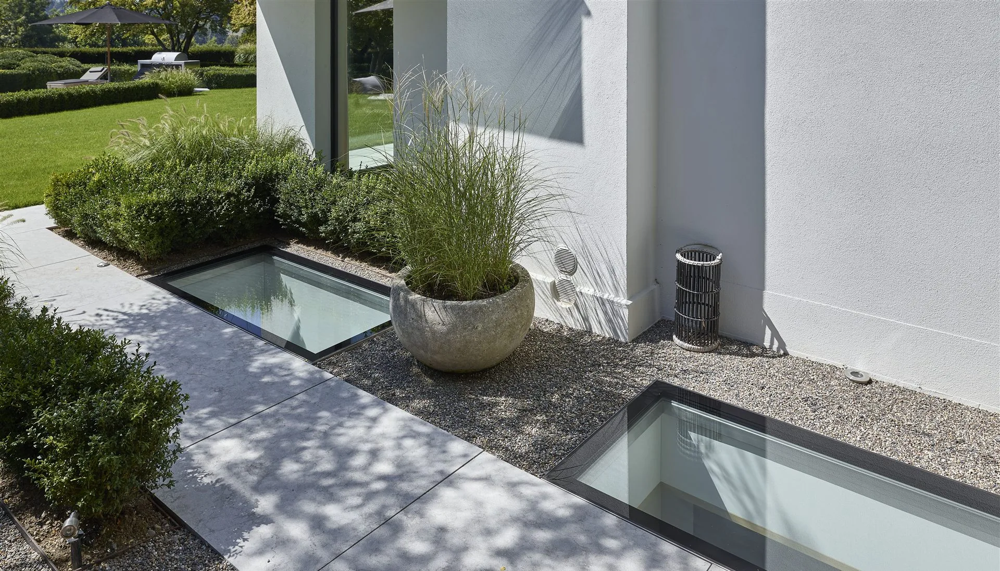
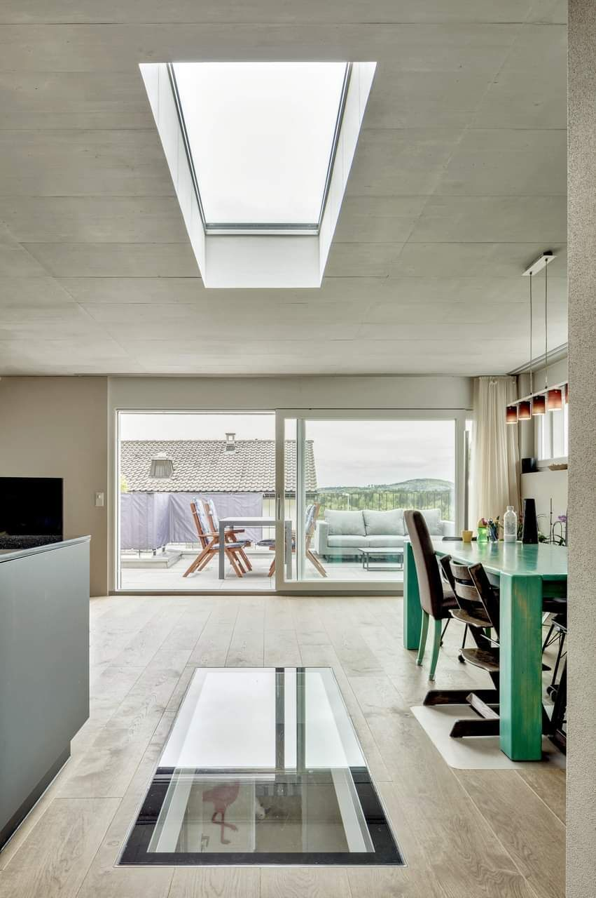
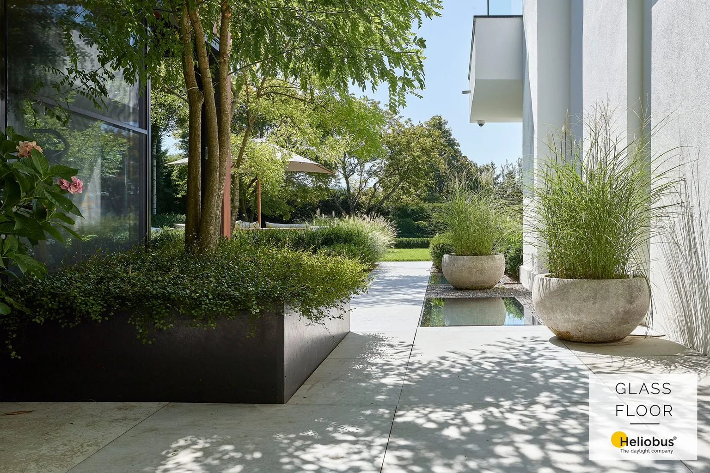

Světlo prochází
místy, která ostatní
považují za podlahu.
- Swiss madeVyvinuto a vyrobeno ve St. Gallen
- 2004Vznik GLASSFLOOR ve St. Gallen
- 20+ letOvěřeno v praxi, ne novinka na trhu
- REI 120Požární odolnost varianty FIRESTOP
GLASSFLOOR není řešení pro každý projekt.
Není levnější variantou běžného světlíku a nesnaží se jí být. Dává smysl na stavbách, kde váží architektura, detail a technická kvalita. Proto každý projekt nejprve technicky posuzujeme.

Jeden systém, tři tvary.
Řady se liší tím, kolik rámu je po osazení vidět, a tvarem otvoru. Skladba zasklení, nosnost i způsob osazení zůstávají stejné.
GLASSFLOOR chrome
Nerezový rám široký 4 cm zůstává přiznaný. Působí masivně a drží tvar i u větších rozměrů.
Prohlédnout řaduGLASSFLOOR pure
Velmi úzký obvodový rám. Ze skla se stává téměř jen plocha v podlaze.
Prohlédnout řaduGLASSFLOOR circle
Kruh jako protiváha pravoúhlé stavbě, nebo naopak doplnění organické architektury.
Prohlédnout řaduKaždá řada existuje i v požárně odolném provedení FIRESTOP a ve variantách s větráním (AIRFLOW) nebo odvodem kouře (RWA). Mimo standardní řadu vyrábíme na míru od 40 cm.
Zumikon · obytné podlaží pod zahradou
Rodinný dům · Švýcarsko
Zahrada zůstala pochozí v celé ploše. Řada světlíků sleduje chodník podél fasády a o podlaží níž nahrazuje umělé osvětlení denním světlem.
Představte nám svůj projekt.
Pošlete nám základní výkres nebo popis záměru. Posoudíme vhodnost systému GLASSFLOOR a navrhneme další technický postup.
Každý projekt nejprve technicky posuzujeme. GLASSFLOOR je zakázkové řešení bez ceníku. Cena vychází z technického návrhu konkrétního kusu.
Oficiální zastoupení GLASSFLOOR® pro Českou republiku – WT - WINDOWS TOMORROW s.r.o. Vyrábí a garantuje Heliobus AG, St. Gallen, Švýcarsko.
Stačí základní výkres, řez nebo jen popis záměru. Klidně i fotka nebo náčrt tužkou.
Řekneme na rovinu, jestli GLASSFLOOR na vaši konstrukci sedí, a proč.
Konkrétní řadu, rozměr a způsob osazení, případně i orientační cenu.